サービス
情報が残る（ペット）
DNAを抽出し、弊社指定ラボにて保管。性格や見た目、全てのベースであるDNAの保管。
※かかりつけの動物病院で血液/口腔粘膜を採取し、弊社指定ラボにご送付頂く必要がございます。

遺伝情報をカタチに
保管されている遺伝情報に基づいた、オーダーメイド「偲び」プロダクトの制作。遺伝配列、ATGC4文字の記号を色に置き換えたデザインで、オリジナルプロダクトを提供いたします。
またお世話ができる
世界初。唯一無二。旅立ってしまったペットの遺伝子を導入した植物(種)を提供致します。植物なので生きている。あの子の情報を持った生命がある。芽が出て花を咲かせる。同じ部屋で呼吸をする。これまでになかった、温かみのある供養体験を提供。
※規制クリア後にサービスリリース